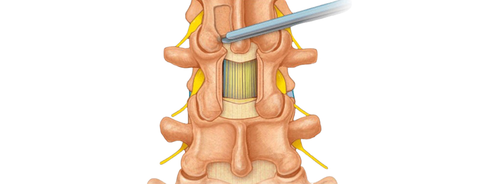

- 경추 후궁 성형술
- 미세 현미경 수술
- 최소 침습 척추체 유합술
- 경피적 척추체 성형술
- 척추 교정술
- 전방 경추 유합술
- 척추 후궁 절제술
- 척추 후궁 유합술
- 경추 후궁 성형술
- 경추 인공 디스크 치환술
Laminectomy 척추 후궁 절제술

척추 후궁 절제술은 신경 압박이 발생하는 부위의 후궁을 절제하여 돌출된 신경을 제거하는 수술법입니다.
척추관이 좁아져 압력이 증가한 경우 후궁을 절제해 척추관을 넓혀주면 신경 압박이 줄어들어 통증이 감소합니다.
척추 후궁은 신경이 지나가는 통로를 얘기하는데 돌출된 디스크나 뼈 인대가 두꺼워지며
통증이 발생하며 통증의 원인을 완전히 잘라내 통증 발생 원인을 제거하는 근본적인 수술입니다.
GUROSUNGSIM HOSPITAL 척추 후궁 절제술 특징


마취
전신마취

절개
2-3cm 두군데 절개

수술 시간
평균 1시간 내외

입원 기간
3-5일 입원

샤워
실밥 제거(수술 14일차) 후

일상
4-6주간 보조기 착용
GUROSUNGSIM HOSPITAL 척추 후궁 절제술 vs 유합술 vs 성형술 비교
| 척추 후궁 절제술 | 척추 후궁 유합술 | 척추 후궁 성형술 | |
|---|---|---|---|
| 목적 | 신경 압박 완화 | 신경 압박 완화 + 안정성 확보 | 신경 압박 완화 + 척추 보호 |
| 방식 | 후궁 제거 | 후궁 제거 + 척추 고정 | 후궁 일부 열어 고정 |
| 안정성 | 다소 약화 가능성 있음 | 강한 안정성 확보 | 원래 구조 최대한 유지 |
| 회복 기간 | 6주 가량 소요 | 12주 가량 소요 | 4주 가량 소요 |
| 단점 | 불안정 가능성 있음 | 수술 범위가 크고 회복이 느림 | 일부 환자에게만 적용 가능 |
GUROSUNGSIM HOSPITAL 척추 후궁 절제술 적용 대상
척수병증 환자
척추관 협착증 환자
후종인대 골화증 환자